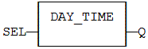
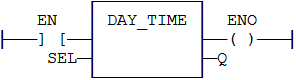

Function
Format the current date/time to a string.
|
Name |
Type |
Description |
|
SEL |
DINT |
Format selector. |
|
Name |
Type |
Description |
|
Q |
STRING |
String containing formatted date or time. |
Real Time clock may be not available on some targets. Please refer to OEM instructions for further details about available features.
Possible values of the SEL input are:
|
Value |
Meaning |
|
1 |
current time - format: 'HH:MM:SS'. |
|
2 |
day of the week. |
|
0 (default) |
current date - format: 'YYYY/MM/DD'. |
In LD language, the operation is executed only if the input rung (EN) is TRUE. The output rung (ENO) keeps the same value as the input rung.
Q := DAY_TIME (SEL);

The function is executed only if EN is TRUE.
ENO keeps the same value as EN.

Op1: LD SEL
DAY_TIME
ST Q